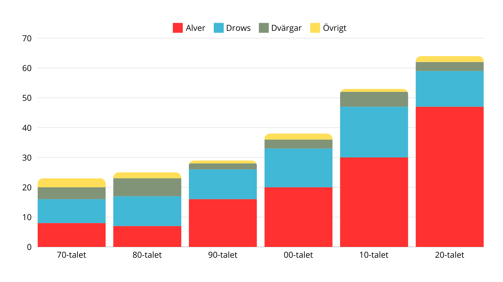

Katakomberna. Antalet olyckor orsakade av fylletrolleri
har ökat markant under det senaste året, och Grymtmyndigheten
överväger nu att införa ett förbud mot magi under påverkan.
Enligt de senaste siffrorna från Katakombernas Statistik- och
Undersökningsinstitut (KSU) har incidenterna kopplade till
trollformler kastade under berusning ökat med 300 procent på de
senaste 50 åren föregående år. Detta har lett till allvarliga skador
och, i vissa fall, permanenta förvandlingar.
Bland de mest skrämmande händelserna finner vi olyckan
med alven Filendil "Fylle-Fille" Moonwhisper, som i ett tillstånd
av kraftig berusning försökte förvandla ett bananskal till en drake
– men istället råkade omvandla hela sitt ben till ett eldsprutande
vildsvin. Händelsen fick ett abrupt slut först när en grupp av
Skadekontrollgoblins anlände och lyckades avbryta förtrollningen.
Filendil befinner sig nu i rehabilitering, men hans vildsvinsben
sägs fortfarande grymta vid fullmåne.
En talesperson för Grymtmyndigheten, Sate Storfläsk, bekräftar
att myndigheten nu överväger ett totalförbud mot fylletrolleri.
"Vi kan inte längre ignorera de faror som magi under påverkan
innebär," säger Storfläsk. "Vi har sett förödande konsekvenser för
både de utövande magikerna och oskyldiga runtomkring dem. Därför
överväger vi nu stränga restriktioner eller ett direkt förbud mot att
använda trollformler i alkoholpåverkat tillstånd."

Även Katakombernas Kränkningsråd har gått ut och uttryckt
stöd för ett förbud, med argumentet att fylletrolleri ofta leder till
övertramp på andras integritet och säkerhet. Ett exempel på detta
är den ökända fylletrollaren Gurgla "Gurglaren" Stenfot, som under
en fest lyckades förtrolla en hel publik till att tro att de var bönsyrselar.
Incidenten tog en hel vecka att återställa och har lämnat både fysiska
och psykologiska spår hos de drabbade.
Men inte alla är positiva till ett förbud. Föreningen för Fri
Magianvändning (FFM) menar att ansvaret borde ligga på individen
och inte regleras av lagar.
”Vi är vuxna varelser, och vi har rätt att bestämma över vårt eget
bruk av magi," säger Morfensus Bloddryp, talesperson för FFM.

"Alkohol har länge varit en integrerad del av den magiska kulturen, och det är vårt eget ansvar att hantera de risker som kommer med den."
Förslaget om ett förbud väntas komma upp till diskussion vid nästa möte i Grymtmyndighetens Råd, där potentiella konsekvenser för förbudet kommer att vägas mot de ökande olyckstalen. Tills vidare rekommenderar myndigheten att alla magiker tänker två gånger innan de blandar vin med vilda trollformler.